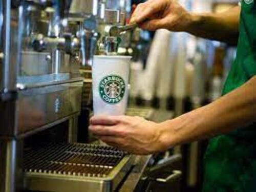
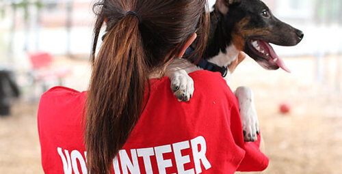
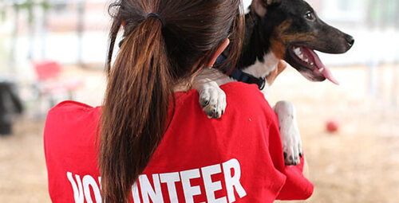
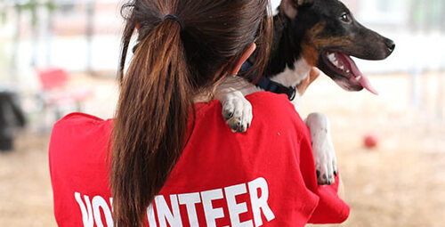

Andrea Vargas
My name is Andrea Vargas and I am currently a full-time student at University of California, Riverside. I am currently undecided on my major but am looking into majoring in Psychology. I am a highly motivated and diligent full-time student with a strong work ethic seeking a challenging opportunity to utilize and enhance my skills in a dynamic work environment. Outside of school, I am a part-time Starbucks barista. My experiences as a barista have taught me how to efficiently operate a cash register, ensure accurate transactions and handle customer inquiries and complaints. I also prepared and served high-quality beverages and food items in a fast-paced environment, following Starbucks' standards. It also gave me the opportunity to collaborate with team members to maintain cleanliness and organization of the store, including restocking supplies and sanitizing workstations.
My experiences have taught me several useful skills, beginning with communication, allowing me to convey information to diverse audiences. I also have strong organizational skills and am capable of prioritizing tasks and meeting deadlines in a fast-paced environment. Being a Starbucks barista also made me a better multitasker, a quick learner with the ability to adapt to changing situations and environments, and a problem solver with the capacity to identify issues and implement effective solutions.
Overall, my experiences as a full-time student and Starbucks barista have helped me garner relevant skills, such as customer service, communication, and teamwork.
Experience
Starbucks Barista
• Prepared food and beverages at Starbuck's standards
• Collaborated with other team members in a fast-paced environment
• Handled customer inquiries
Volunteered at animal shelter
• Looked after a variety of animals
• Maintained cleanliness of the animal shelter
Theater Techincian
• Created costume and makeup designs for student-led high school theater productions.
• Helped create lighitng and sound designs.
• Suoervised backstage during shows to make sure everything ran smoothly
• Organized prop design sheets
Education
University of California, Riverside
Portfolio

.jpg) 

